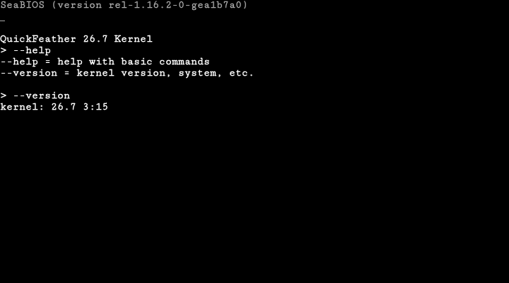

QuickFeather es un sistema operativo por SpacesBoot. Sin bloatware, sin anuncios. Solo lo esencial, y rápido.

7 de noviembre del 2026, 3:15 PM
64 bits
Hecho para QuickFeather
Todavía no se sabe
Código abierto
Software libre
--help--versionÚltimos 5 cambios del proyecto, tomados del repositorio en GitHub.
Cargando historial...
QuickFeather es software libre. Puedes usarlo, estudiarlo, modificarlo y compartirlo bajo los términos de la GNU GPLv3.